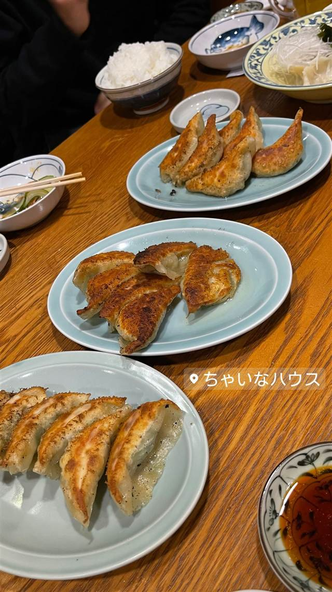

町中華 · 餃子専門 · 仙石原
ちゃいなハウス
皮を一枚ずつ手でのばす、ニンニクと銀杏入りのスタミナ餃子
ちゃいなハウス
神奈川県箱根町仙石原にある町中華の人気店で、看板は手打ち餃子。皮を一枚ずつ手でのばして作る餃子は、ニンニクと銀杏入りの「スタミナ餃子」やシソ香る「シソ餃子」など種類豊富で、箱根観光客にも長く親しまれている。
TRIVIA
豆知識
- 皮を一枚ずつ手でのばす手打ち餃子で、店内に専用の皮のばし工房がある。
- 常連の口コミでは20年以上前から仙石原で営業を続けているとされる。
REVIEWS
世間の評判
手打ち餃子15種の豊富さ
- ギンナンやニンニク入りのスタミナ餃子を評価する声が多い
- 野菜スープが効いたラーメンを評価する声がある
- 付け合わせのぬか漬けもおいしいという声がある
Retty・ホットペッパー
| 看板 | 手打ち餃子（スタミナ餃子・シソ餃子など） |
|---|---|
| こだわり | 皮を一枚ずつ手でのばして作る手打ち餃子で、店内に専用の皮のばし工房を持つ。ニンニクと銀杏入りの「スタミナ餃子」、シソ香る「シソ餃子」など種類が豊富。 |
| どこから | 日帰りで行ける遠さ |
| 行くなら | 行列 |
| 予算 | 昼 ¥1,000～¥1,999 夜 ¥1,000～¥1,999 |
| 定休日 | 火曜・第2/3月曜(要確認) |
| 場所 | 箱根登山バス「仙石」バス停付近 神奈川県足柄下郡箱根町仙石原164-1 |
| メモ | 箱根・仙石原の人気餃子店で、行列ができることも多い町中華。 |
食べたもの：餃子
NEARBY
近い店・同じ系統の店
-
 そば 箱根登山バス「仙石」バス停付近
座りや
実家の無農薬野菜天ぷらと、店主の故郷仕込み十割そば
昼 ¥1,000～¥1,999 夜 ¥1,000～¥1,999
そば 箱根登山バス「仙石」バス停付近
座りや
実家の無農薬野菜天ぷらと、店主の故郷仕込み十割そば
昼 ¥1,000～¥1,999 夜 ¥1,000～¥1,999
-
 餃子専門 亀戸駅
亀戸餃子 本店
座ると自動で2皿確定、1955年創業の下町餃子専門店
昼 ～¥999 夜 ～¥999
餃子専門 亀戸駅
亀戸餃子 本店
座ると自動で2皿確定、1955年創業の下町餃子専門店
昼 ～¥999 夜 ～¥999
-
 餃子専門 幡ヶ谷
您好（ニイハオ）
ひき肉でなく粗く刻んだ肉を使う、連続ビブグルマンの餃子
昼 ¥2,000～¥2,999 夜 ¥2,000～¥2,999
餃子専門 幡ヶ谷
您好（ニイハオ）
ひき肉でなく粗く刻んだ肉を使う、連続ビブグルマンの餃子
昼 ¥2,000～¥2,999 夜 ¥2,000～¥2,999
-
 餃子専門 乃木坂
赤坂珉珉（みんみん）
酢コショウで食べる元祖、渋谷の名店直系ののれん分け店
夜 ¥4,000～¥4,999
餃子専門 乃木坂
赤坂珉珉（みんみん）
酢コショウで食べる元祖、渋谷の名店直系ののれん分け店
夜 ¥4,000～¥4,999
-
 餃子専門 銀座一丁目
銀座天龍 本店
ニンニクを使わず白菜と豚肉だけで作る12cmの大判餃子を創業以来守る
昼 ¥1,000～¥1,999 夜 ¥3,000～¥3,999
餃子専門 銀座一丁目
銀座天龍 本店
ニンニクを使わず白菜と豚肉だけで作る12cmの大判餃子を創業以来守る
昼 ¥1,000～¥1,999 夜 ¥3,000～¥3,999
-
 餃子専門 飯田橋駅
餃子の店 おけ以
東京に焼き餃子を広めた老舗、羽根つき餃子は1日1300個
昼 ¥1,000～¥1,999 夜 ¥1,000～¥1,999
餃子専門 飯田橋駅
餃子の店 おけ以
東京に焼き餃子を広めた老舗、羽根つき餃子は1日1300個
昼 ¥1,000～¥1,999 夜 ¥1,000～¥1,999